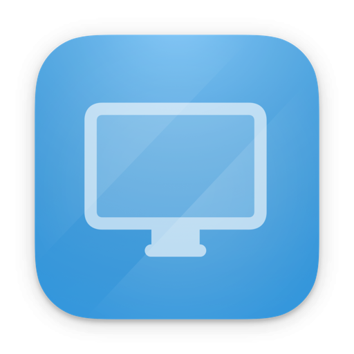
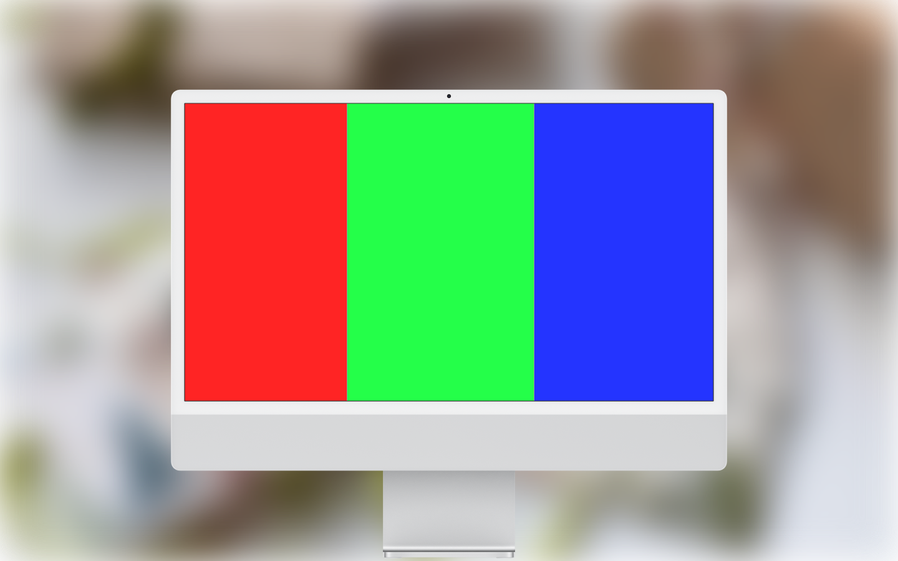
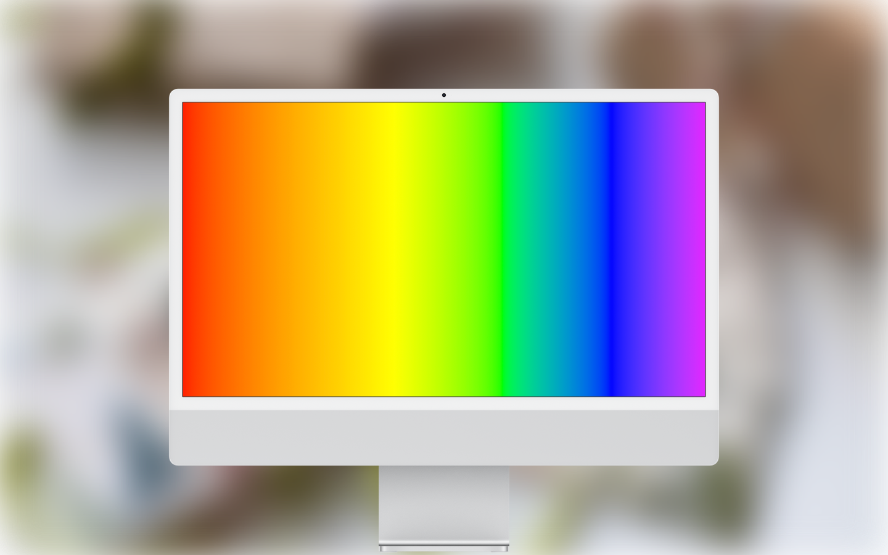
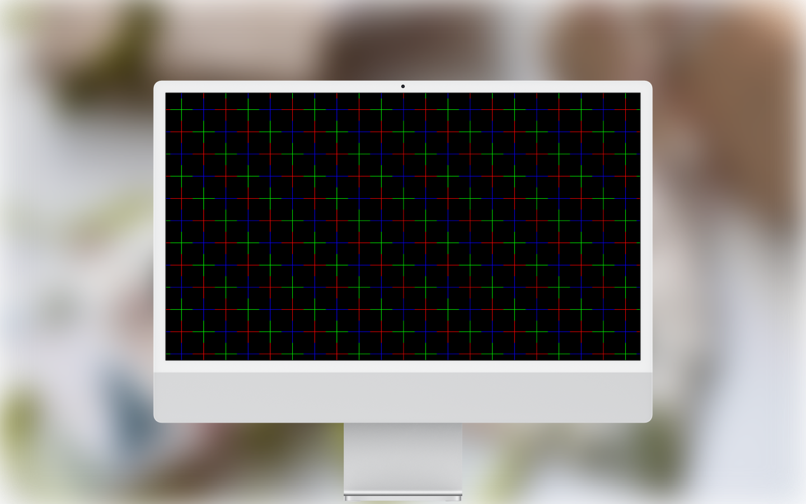
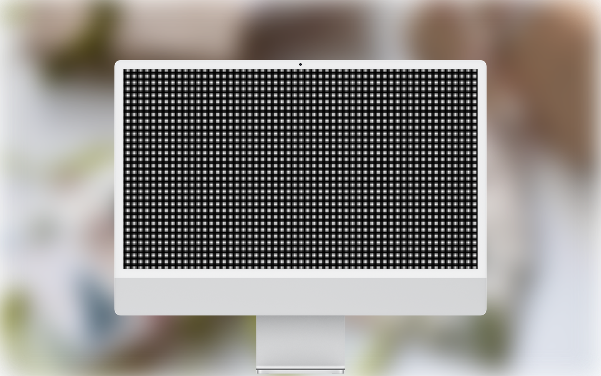

English • 联系&支持 • 更新日志




快速、轻松地评估显示器的图像质量与显示效果。
本应用内置 25 项以上测试图案，可用于检测坏点、漏光、竖向条纹、屏幕均匀性等常见显示问题，适用于显示器测试、屏幕检测及坏点检测等多种场景，是一款实用可靠的显示器检测工具。
无论是普通用户还是专业人士，都可以通过本应用简单、高效地评估显示设备的显示质量。
注意：本应用通常不会对显示设备造成任何损害，但无法替代专业检测设备，测试结果仅供参考。